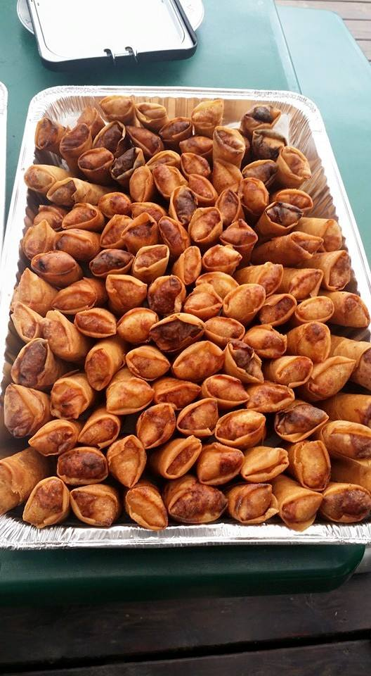

Aproximate cook time: 1hr
Prep time: 15minutes
Ingrediants:
Slice bok choy and bell peppers into desired sizes and place in boiling pot of water with salt. Quickly drain and place vegetables on the side. Also boil desired amount of noodles and place on the side
For the marinade, combine, the oil, rice vinegar, sugar, honey and tamari. Cube the tofu and marinade for about 1hr.
Oil a wok or large pan and cook tofu on medium heat.
Combine vegatables, noodles, and tofu on top.
Source: Douglas Tran
"This is a family recipe that i know how to make... but only in large portions. We literally kinda wing it every time."
Aproximate cook time: 2hrs
Prep time: 2hrs
Ingrediants:
Typically, there should be a good ratio of pork, carrots, and jicama. Place the ground pork on one side a massive mixing bowl. Shred enough carrots and jicama so there will be at least 1/2 pork, 1/4 carrots, 1/4 jicama. Shred both green and white onion. Toss in Salt, sugar and pepper. Seperate the egg yolk and set it asside in a seperate bowl. Eggwhites go inside the mixing bowl as well. Mix well.
Place a spoonful of the mix onto the corner of an eggroll wrapper and roll into desired shape. Dip finger into the egg yolk and smear on opposite corner of the roll so that it binds the eggroll together. Deep fry!
Source: Douglas Tran
"This is a variation of our family recipe. Technically it's like a burito where you can add anything you want. I decided to go a pineapple tofo, marinade... "
Aproximate cook time: 15minshrs
Prep time: 1hr
Ingrediants:
Crush garlic and toss into pot of water. Shred Jicama and steam above the pot of water with the garlic.
Slice tofu into 1/4 inch strips and marinade with the pineapple juice.
Beat eggs together and cook on the stove so its like an ommlette. Slice into 1/4 inch slices.
For the sauce, pour all hoison sauce on sauce pan and add peanut butter. Simmer and mix on low heat.
Cook pineapple and tofu on pan.
submerge spring roll wrap in warm water. Don't leave it in too long because if it is too wet and starts becoming into a foldable shape, it'll be much harder. Take it out and assemble, desired amount of jicama, egg, cooked pineapple, tofu, mint, cilantro and then roll.
Source: Douglas Tran